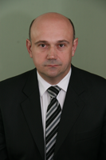

Городко Сергей Иванович
ассистент кафедры систем управления

Дисциплины: СТП, МП СУ
Основные публикации:
1. Ольшевский Н.И., Пашкевич А.П., Городко С.И. и др. Лабораторный практикум по курсу "Управляющие вычислительные машины" для студентов специальности "Автоматическое управление в технических системах". Мн.: БГУИР, 1997.-137 с.
2. Красовский В.И., Родин А.Я., Городко С.И., Ловчий Н.Н. Методическое обеспечение дистанционного обучения в БГУИР.-Мн.: БГУИР, 2002